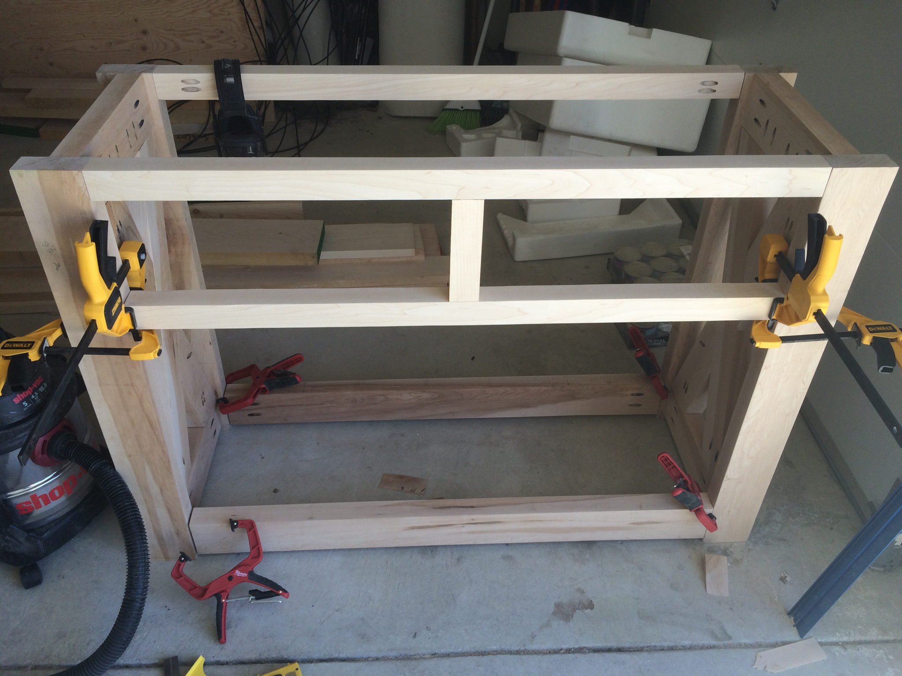
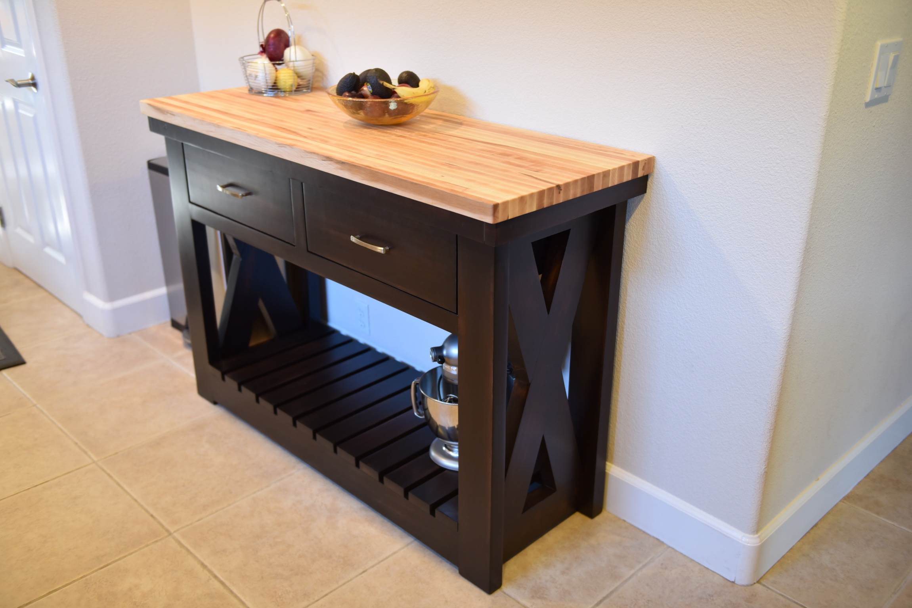

Photography is one of my go-to hobbies for expressing my creativity. While I am by no means a professional, I take pride in many of the shots I take. While it might be fun to earn a little money someday through my photography, right now I am just enjoying building on my experience. I've attached a couple of photos below from a wedding I photographed for free for a couple of close friends.


Every now and again, I get the hankering to build. Luckily, my wife usually has plenty of ideas when I tell her I want to build something. For instance, the pictures below are of a kitchen counter/island she really wanted.
 Having a young boy means lots and lots of Lego in our house. Of course, I quickly discovered that Lego building is now also targeted at adults. The links below will take you to a couple of Youtube videos I made of some Lego builds.
Lego Ghostbusters Firehouse Headquarters Lego Haunted House